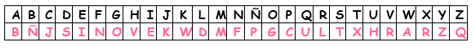
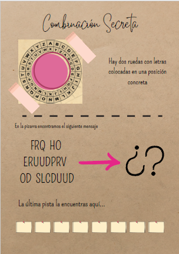
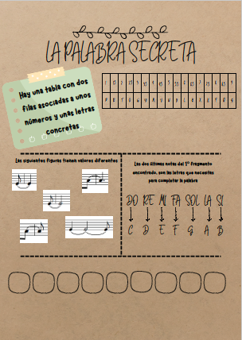
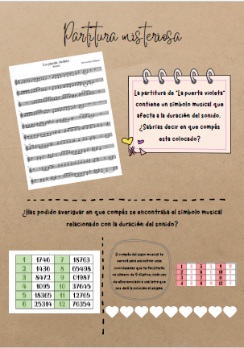

ACTIVIDAD 1
Organizamos el Breakout Educativo
Mediante una serie de pistas, el alumnado llegará hasta una partitura de W. A. Mozart. El breakout esta dividido en 4 pistas diferentes y cada una de ellas les acercará hasta un trozo de la partitura, la cual deberá ser montada por el alumnado a modo de puzzle.
1ª pista: Encuentra una palabra

2ª pista: Combinación Secreta

3ª Pista: La Palabra Secreta

4ª Pista: Partitura Misteriosa

Cada una de las cuatro pistas, les van a llevar hasta un trozo de una partitura de Mozart, que el alumnado debe saber juntar para poder interpretarla en la siguiente sesión mediante la voz y el instrumental ORFF.
Evaluación del Breakout Educativo
| LISTA DE COTEJO | SI | NO |
| Se esfuerzan en tener una actitud de entrega que contribuye en el buen funcionamiento del grupo | ||
| Cumple con todas las exigencias proporcionadas por la profesora para el desarrollo del Breakout | ||
| Hacen un buen uso de la información para resolver los distintos retos propuestos | ||
| Economizan el tiempo de manera adecuada con la finalidad de conseguir un buen resultado | ||
| Muestra una buena actitud con su grupo |
Duración de la actividad: 55 min